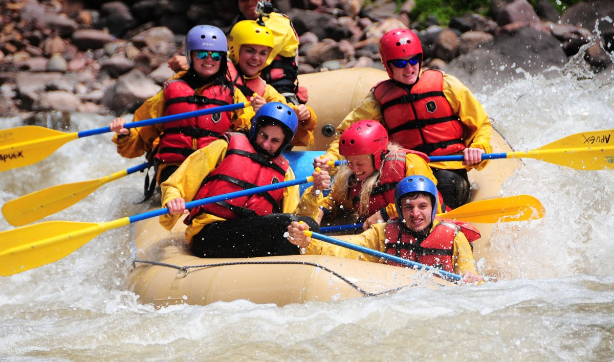

Whitewater rafting in the Amazon has a rich history that intertwines with the region's natural beauty and adventurous spirit. The Amazon River and its tributaries have long been a source of fascination for explorers and adventurers seeking to navigate its challenging rapids and untamed waters. Over the centuries, the river has tested the courage and skill of countless travelers, offering both exhilarating thrills and breathtaking scenery. Its winding channels and hidden waterfalls have inspired legends, stories, and a profound respect for nature's power.
Indigenous communities have utilized the river for transportation, fishing, and sustenance for centuries, showcasing their deep connection to the environment. These communities developed intricate knowledge of the river's patterns, seasonal changes, and aquatic life, passing down generations of wisdom that remain invaluable today. Modern rafting tours allow visitors to experience a glimpse of this history, blending adventure with cultural appreciation and environmental awareness.